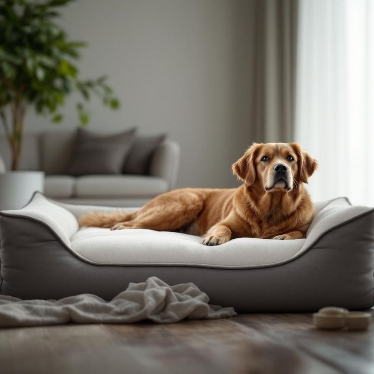
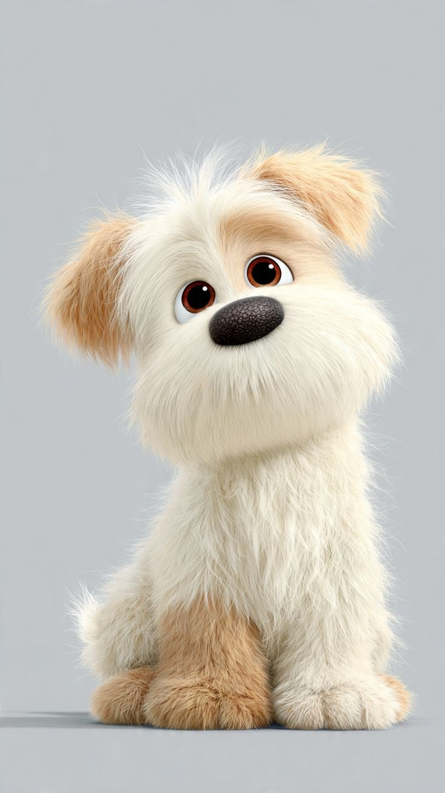

Адаптация собаки в новом доме
Переезд в новый дом и тем более в незнакомый для собаки - это стресс. Собаке необходимо дать столько времени для адаптации, сколько потребуется именно ей для того, чтобы почувствовать себя в безопасности и постепенно освоиться в новой обстановке.
Что в новом доме становится стрессом
Рассмотрим основные факторы стресса, которые влияют на поведение собаки, и с которыми ей обязательно нужно помочь справиться.

Как может проявится стресс у собаки после переезда
Самый большой страх у владельцев - что так будет всегда, и если это поведение срочно не изменить, не установить все правила, которые будут, то так навсегда и останется. Но на самом деле все как раз наоборот, потому что попытки изменить поведение собаки не менеджментом среды, а воздействием на собаку, чтобы она ничего из нижеперечисленного не делала, не боялась, не лаяла, не брала что-то со стола, не защищала ресурсы, не делала лужи, и следовала всем правилам - все это наоборот только ухудшает ситуацию. Это часть нормального процесса и так будет не всегда при условии, что владелец собаки будет действовать разумно и учитывая причинно-следственные связи..
Как помочь собаке быстрее адаптироваться
Покой в первые дни
Постарайтесь первое время не приглашать гостей, не устраивать шумных мероприятий, и даже по возможности - отложить поход к ветеринару и гигиенические процедуры.
Начните с коротких прогулок близко к дому, чтобы не перевозбуждать нервную систему собаки.
Дать собаке пространство и время
Постарайтесь обеспечить собаке уютное и безопасное место отдыха.
Не настаивайте на общении и особенно объятиях.
Ставьте только те рамки, с которыми собака точно сможет справиться.
Безопасная среда
Используйте доброжелательный тон в общении, будьте внимательны к потребностям собаки и спокойно относитесь к ее ошибкам.
Обеспечить изобилие
Доступ к членам семьи, отсутствие изоляции.
Игрушки и другие вещи, которые доступны собаке, чтобы она имела возможность с ними поиграть, погрызть, полежать с ними в лежанке.
Вкусная пища и лакомства, которые могут порадовать собаку (без резкой смены рациона).
Удобная амуниция.
Основные стратегии поведения собаки в процессе адаптации
Малоподвижное поведение
Затаивание может выражаться в разной степени, начиная от того, что собака забилась в угол и оттуда не выходит, или выходит только поесть и быстро возвращается обратно.
Другой вариант затаивания - когда собака ведет себя очень робко, она не возьмет пищу со стола, она послушно дает надеть на себя амуницию и идет гулять и т.д.
И когда у собаки завершается процесс затаивания, и она начинает адаптироваться и более активно себя проявлять, меньше лежать, больше изучать среду и пространство, человек может испугаться того, что поведение собаки меняется в нежелательную для семьи сторону.
Если собака стала более активной, а вместе с тем, стала более неудобной, вы ее не избаловали, просто она стала больше вам доверять и адаптироваться к среде. Она позволяет себе предпринимать попытки удовлетворить свои потребности и сообщить о своих желаниях.
Возбужденное поведение
Собака может суетиться, лаять, может много перемещаться, возможно что-то грызть. Это также проявление стресса в виде повышенной двигательной активности собаки.
В условиях стресса мозг собаки просто не способен одновременно адаптироваться к новой окружающей среде, и выполнять сложные когнитивные процессы по запоминанию новых правил, самоконтролю и т.д.
У одной собаки первичная адаптация занимает несколько дней, у другой - месяц. Есть собаки, у которых есть пробелы в социализации, сильные страхи - им понадобится больше времени. Также важно помнить, что если переезжает взрослая собака, то, после того как уже прошло какое-то время, важно посетить с ней ветеринарного специалиста, так как у сениоров возможно обострение хронических болезней на фоне стресса. Это, например, может быть причиной появившейся нечистоплотности.
Дополнительные методы, которые смогут ускорить адаптацию собаки
Собака легче учится, чувствует себя более уверенно, учится испытывать интерес к новому
Реализация видотипичного поведения, как следствие удовлетворение потребностей собаки, что положительно сказывается на ее поведении в целом
По результатам клинических испытаний успокаивающая музыка снижает тревожность у 85% собак дома, и у 70% собак в приютах.
Совместный с человеком сон помогает вырабатывать окситоцин, который оказывает противотревожное действие и помогает организму лучше справляться со стрессом.
Жевание помогает активировать парасимпатическую нервную систему и переключить собаку из состояния стресса в состояние расслабления.
Поиск лакомств способствует реализации видотипичного поведения, помогает снижать стресс и развивать поведенческую гибкость.
Что нельзя делать в процессе адаптации
Нельзя насильно вытаскивать собаку или заманивать ее куда-то, ставить миску как можно дальше от того места, от того убежища, которое она себе выбрала, пытаясь ее подтолкнуть к тому, чтобы она осваивала все пространство и начала чувствовать себя в нем более комфортно.
Нельзя применять такие стоп методы, как превышение порога страха, в надежде что собака "поймет", что бояться нечего. Это привидет лишь к усилению чувствительности собаки и риску перехода страха в фобию.
Повторная социализация собаки - почему она бывает необходима собаке?
(незнание правил общения)
(к среде в целом, или отдельным частям среды в частности)
Часто встречается у собак, живущих в вольерах и приютах.
Как помочь собаке преодолеть негативный опыт или его недостаточность:
Обогащенная среда
Поисковые игры, шейпинг и др.
Дать возможность собаке проявить инициативу и включить в повседневную рутину ритуалы - то, что предсказуемость позволяет справляться со стрессом лучше подтверждается клиническими исследованиями.
Очень эффективно создание обогащенной среды, в которой присутствует объект к которому нужно сформировать новое отношение
Выстраивание схемы по созданию нового положительного опыта, например, при недостатке социализации с сородичами - привлечение к работе собаки-ассистента.
Адаптация собаки после переезда в том же составе семьи.
Факторы стресса те же, кроме новых людей.
Первое время, хотя бы сутки, не оставляйте собаку одну. Затем, если она не ходит за членами семьи "хвостиком", можно оставлять собаку по 5-10 мин. желательно под контролем видеокамеры, с дальнейшим увеличением времени.
Адаптация собаки из приюта.
Для собаки из приюта будет новым то, что для домашней собаки может быть рутиной. Для нее новым будет почти все, от обстановки за пределами приюта (дома, машины, лифты, лестницы) до обстановки дома и социального взаимодействия с людьми.
Собака из приюта имеет уже накопленный хронический стресс, скорее всего она длительное время испытывала нехватку чего-то важного: еды (или ее разнообразия), контакта, субъективной безопасности. И когда собака после дефицита попадает в условия, где это есть в достатке, она может испытывать в этом усиленную потребность. Она может испытывать очень много эмоций от нахождения рядом человека, от вида еды - и удерживаться от каких-то искушений ей будет сложно. Если не учитывать это в процессе адаптации собаки, ругать ее за это или изолировать, то собака может из одного хронического стресса перейти в другой и остаться в этом же состоянии.
